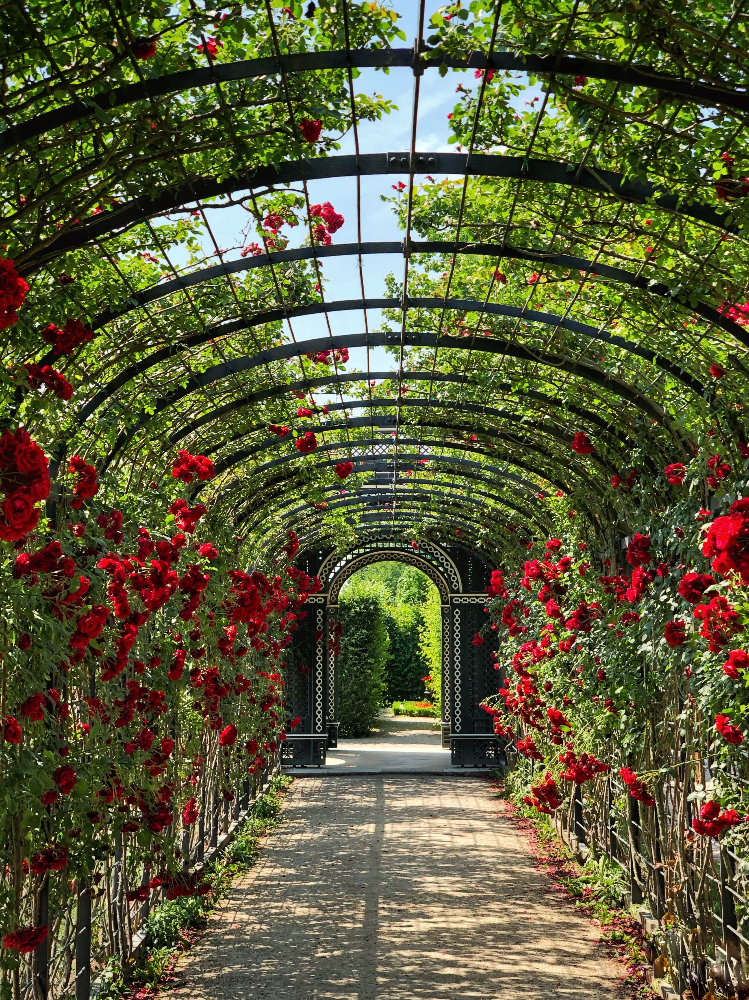

Fantastic Garden
-

-

-

-

- 
Holand - Keukenhof
Keukenhof (English: "Kitchen garden"; Dutch pronunciation: [ˈkøːkə(n)ˌɦɔf]), also known as the Garden of Europe, is one of the world's largest flower gardens, situated in the municipality of Lisse, in the Netherlands.[
According to the official website, Keukenhof Park covers an area of 32 hectares (79 acres) and approximately 7 million flower bulbs are planted in the gardens annually.
Keukenhof is widely known for its tulips, and it also features numerous other flowers, including hyacinths, daffodils, lilies, roses, carnations and irises
Though its grounds are open year-round for private affairs and festivals, Keukenhof is only open to the general public for a world-renowned 8 week tulip display from mid-March to mid-May, with peak viewing arriving near mid-April, depending on growing season weather, which varies annually.
Italy - Villa Carlotta, Como
The western shore of Lake Como, on which rise the hillside gardens of Villa Carlotta, has such a mild year-round climate that it's called Tremezzina Riviera. Foliage here stays green all winter, even when the subalpine peaks that form a backdrop to the gardens are white with snow.
More colorful than most classic Italian gardens, which depend more on their intricate formal designs and manicured hedges, Villa Carlotta dazzles with masses of flowers that change with the seasons. The gardens follow the natural slopes and curves of the hillside, backed by woods that open to reveal magnificent lake and mountain views.
Visit in May to see the 400 camellias and 40-foot-tall banks of rhododendrons in full bloom or all summer long to see the 200 roses and the succession of brilliant annuals. The woodland gardens are a cool and pleasant break on a hot summer day.
Japan - Koraku-en (Okayama)
Called, the “garden of pleasure after,” Koraku-en is located in Okayama. This garden’s name is derived from a proverb of Confucius, in which he explained that a ruler should consider the needs of his subjects first, and his own “pleasure after.”
Construction began in 1687, and the garden was opened to the public in 1884. The Okayama Castle can be viewed from this garden.
France - Fondation Claude Monet
Monet has always been fascinated by the play of light and reflections of clouds on water. His numerous paintings done on his floating studio, in Argenteuil or on the Dutch canals, show his fascination with inverted reflections in these liquid mirrors. In 1893, he acquires a piece of land situated at the end of the Clos Normand, on the other side of the railway line, and diverts the narrow arm of the river Epte , the « Ru ». The thus- created pond will become the « Jardin d’eau » (water garden) , today present on the walls of the world’s greatest museums.
In line with the central path of the « Clos Normand », he has a Japanese bridge constructed, certainly inspired by one of his «Estampes»; he has it painted green, to distinguish it from the red traditionally used in Japan. The oriental atmosphere is recreated with the choice of plants such as bamboos, « ginkgos biloba », maple trees, Japanese peonies, white lilies and the weeping willows which so marvellously frame the pond.Lastly, Monet plants « nymphéas » in the pond itself : « I love water, but I also love flowers. That’s why , once the pond was filled with water, I thought of embellishing it with flowers. I just took a catalogue and chose at random ,that’s all . »
Monet was so proud of his water garden that he liked to receive his guests there , and spent hours contemplating it. A full time gardener , in charge of its maintenance, removed each dead leaf to ensure the perfect beauty of the pond.
In 1897, he starts to paint the « Nymphéas » . In seeking to capture the atmosphere of this surface of sky , on which touches of colour float, Monet is to achieve one of his greatest masterpieces and push his painting to the limits of Abstract Art , in which the vibration of colour is sufficient to evoke a world of feelings and emotions.
Austria - Schloss Belvedere Port
he Baroque gardens of the Belvedere rank among the most beautiful in the world. The main garden is situated between the Lower and the Upper Belvedere and extends over three large terraces.
he design, by Dominique Girard, garden architect of the Elector of Bavaria, showcases all the essential elements of Baroque garden architecture: symmetrical flower parterres, water basins, tiers and steps, trimmed hedges, and more. On the south side of the Upper Belvedere, the reflection pond offers a sophisticated visual: the mirroring effect creates a visible duplication of the monumental palace façade.